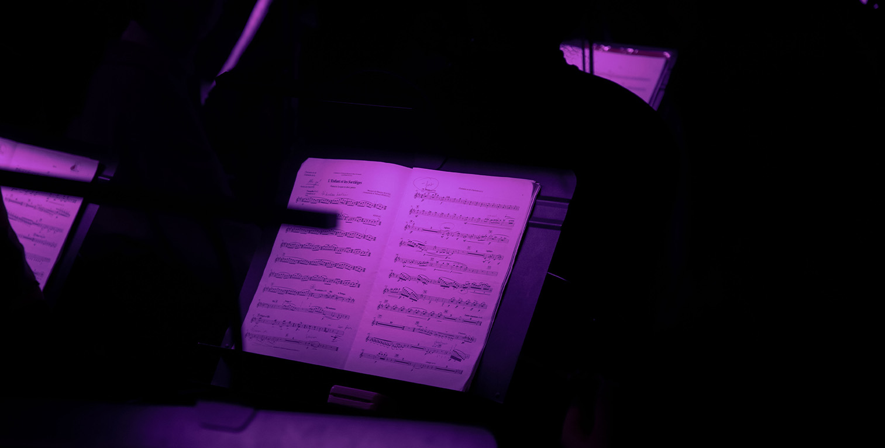
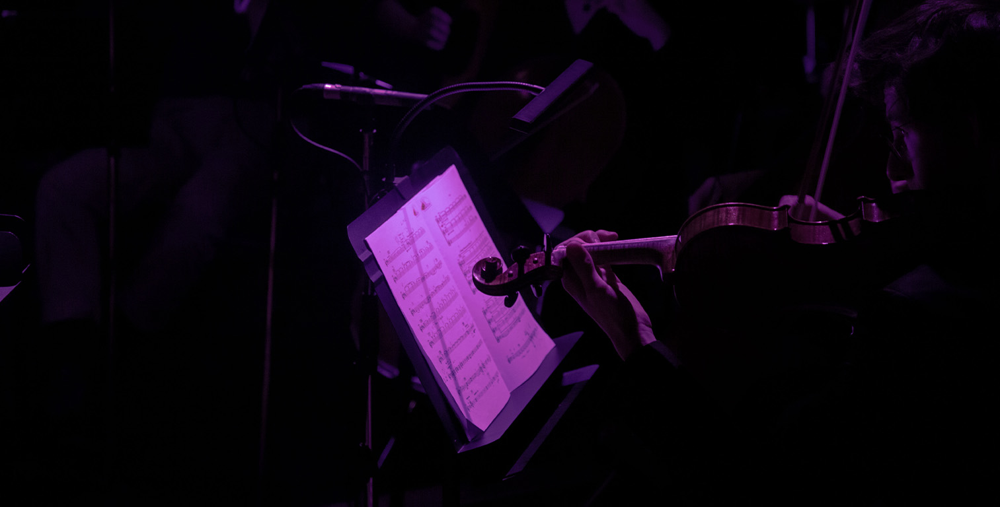
Dernière répétition au Conseratoire de Boulogne-Billancourt.
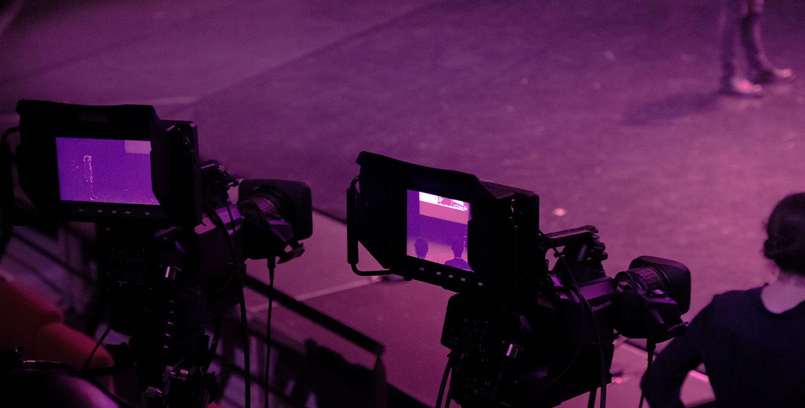
Mise en place de la captation vidéo des BTS Audiovisuel.
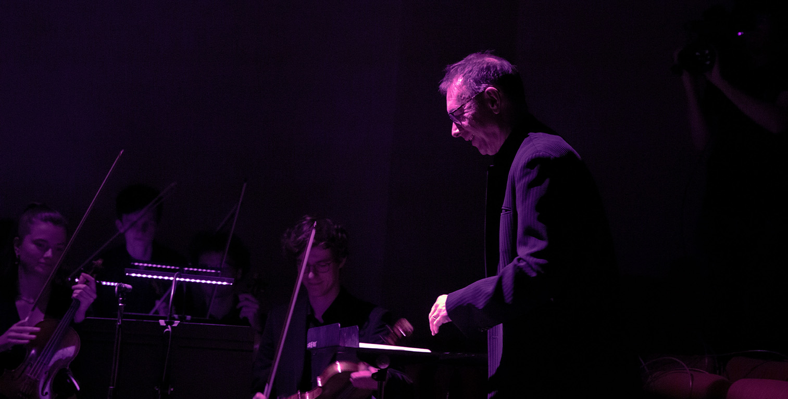
Début du ballet sur Ma Mère L'Oye de Maurice Ravel.
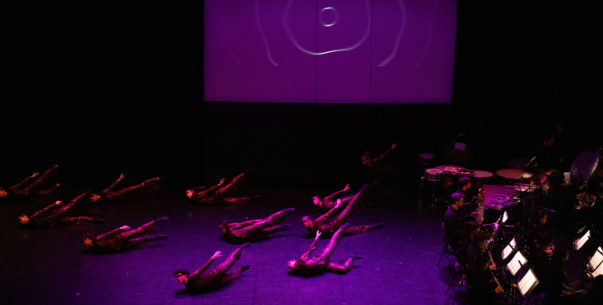
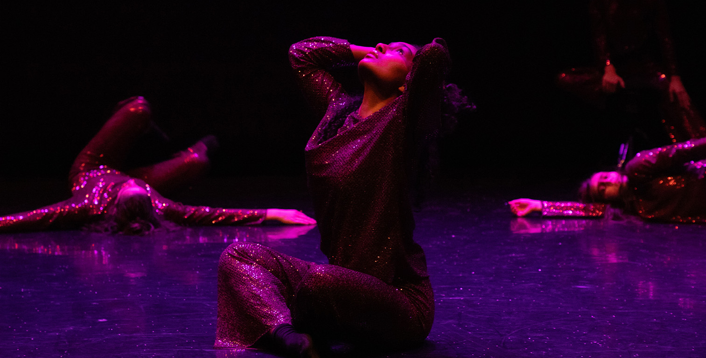
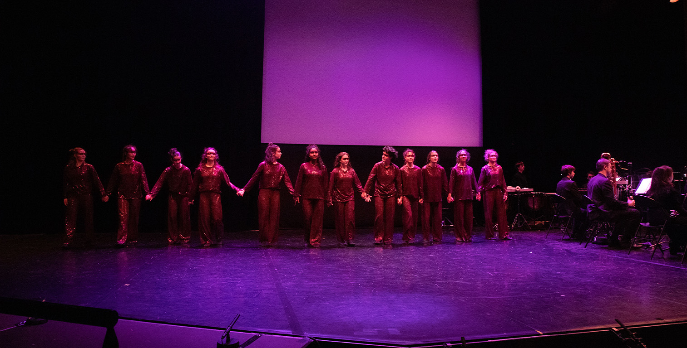
Fin du ballet et mise en place de l'opéra.
Réinstallation des musiciens pour l'opéra.
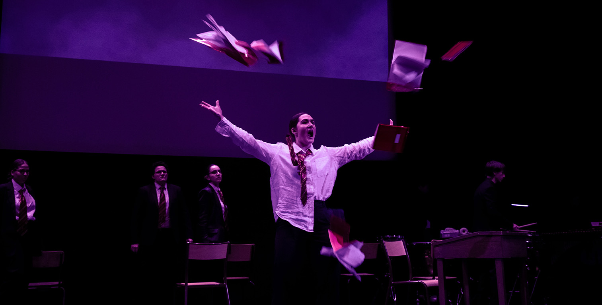
Début de la représentation de L'Enfant et les Sortilèges.
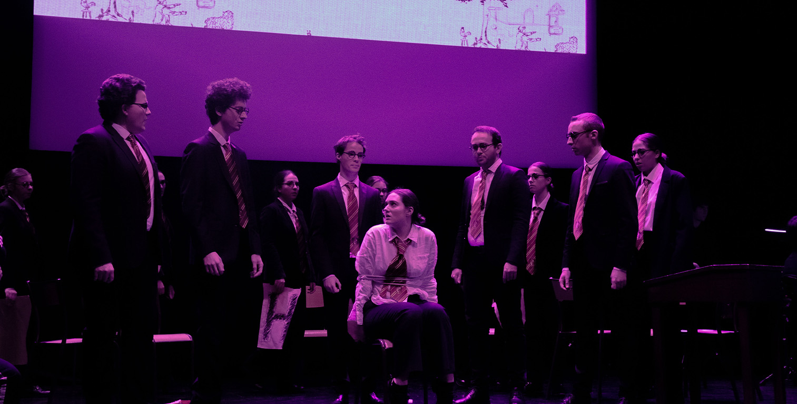
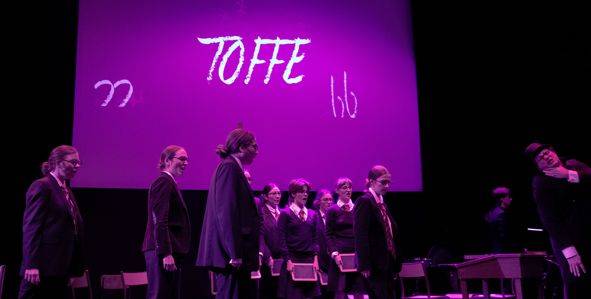
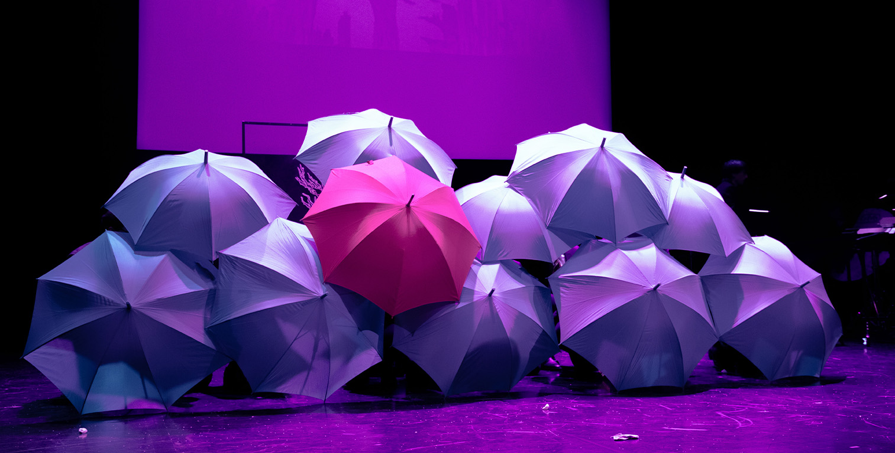
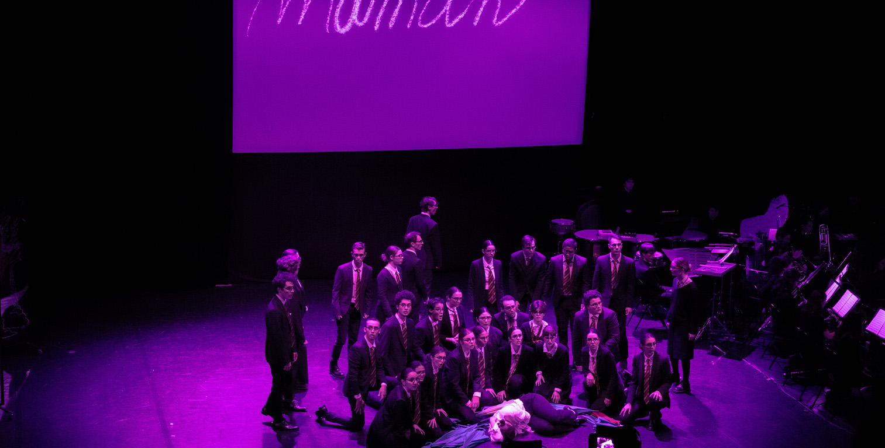
Fin de la représentation et remerciements aux différents intervenants.